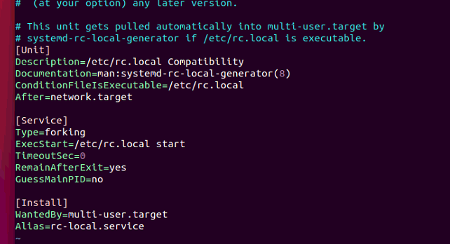
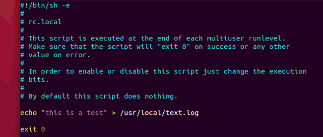

从Ubuntu16.04开始，不再使用initd来管理系统，而改用systemd。
systemd介绍
systemd默认会读取/etc/systemd/system目录下的配置文件，而该目录下的文件又会链接到/lib/systemd/system目录下的文件。
使用systemd配置开机启动
下面以Ubuntu18.04为例，配置开机启动。为了与之前的Ubuntu开机启动的方式保持一致，我们希望仍然在/etc/rc.local 文件中配置开机启动程序。具体操作如下：
1. 配置rc-local.service文件
一般系统安装完之后，/lib/systemd/system目录下会有rc-local.service文件，即我们所需要的配置文件。
打开 rc-local.service文件，可以看到类似以下内容：
1 | # SPDX-License-Identifier: LGPL-2.1+ |
一般来说，正常的启动文件主要分成三部分
[Unit] 段：启动顺序与依赖关系
[Service] 段：启动行为,如何启动，启动类型
[Install] 段：定义如何安装这个配置文件，即怎样做到开机启动
可以看出，/etc/rc.local 的启动顺序是在network后面，但是显然它少了 [Install] 段，也就是，没有定义如何做开机启动，所以我们需要在后面加上 [Install] 段：
1 | [Install] |
配置好之后，文件内容是这样的：

然后保存退出。
2. 配置rc.local文件
因为Ubuntu18.04系统默认是没有 /etc/rc.local 文件的，所以需要我们手动创建，并赋予其可执行权限：
1 | sudo touch /etc/rc.local |
打开rc.local文件，添加以下内容：
1 | #!/bin/sh -e |
接着就可以在里面添加我们所需要的开机启动程序命令，可以直接写命令，也可以执行Shell脚本文件sh。
这里我们先写一个测试命令echo "this just a test" > /usr/local/text.log，以验证脚本是否生效，注意命令一定要写在exit 0之前。
测试命令添加完之后，文件内容是这样的：

3. 为rc.local.service创建软链接
通过ls命令可以看到，/lib/systemd/system/rc.local.service是一个软链接，链接到/lib/systemd/system/rc-local.service，而且 systemd 是默认读取 /etc/systemd/system 下的配置文件,，所以我们还需要在 /etc/systemd/system 目录下创建一个软链接，链接到/lib/systemd/system/rc.local.service，如下：
1 | sudo ln -s /lib/systemd/system/rc.local.service /etc/systemd/system/ |
此时在/etc/systemd/system目录下会看到生成了一个软链接 rc.local.service。
4. 重启系统，验证测试脚本
执行reboot命令重启系统，查看/usr/local目录，会发现生成了一个text.log，说明开机启动已配置成功。